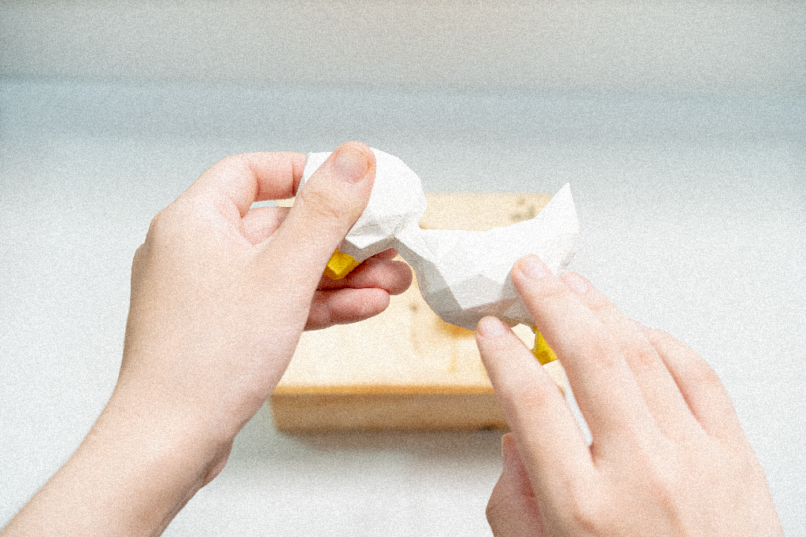

交互设计 · 体验设计 · 无障碍设计 / 2023
视障儿童多感官认知启蒙设计
MULTISENSORY ANIMAL LEARNING
将动物信息拆解为形态、材质、声音与语言，让对象能够通过手部探索与听觉反馈被逐步理解。

00 / OVERVIEW
当视觉不再是默认入口，设计如何让一只动物仍然能够被辨认、理解与记忆？
项目以视障儿童认识动物为切入点，将通常集中在视觉中的信息重新编码为形态、材质、声音与语言。研究贯穿触觉调研、形态提取、三维转译、实体制作与交互验证，最终建立一个可扩展的多感官认知单元。
- 年份 / YEAR
- 2023
- 类型 / TYPE
- 交互设计 · 体验设计 · 信息设计 · 无障碍设计
- 工具 / TOOLS
- Cinema 4D / Photoshop / Illustrator
- 角色 / ROLE
- 独立设计
READING MAP
从非视觉问题到多感官认知系统
目录按照真实设计顺序组织。每张图片只在最能解释它的章节出现一次，阅读重点放在研究如何进入设计判断，以及信息如何被重新编码。
01 / PROBLEM DEFINITION
如果不能依赖视觉，如何认识一只动物？
把完整视觉图像拆解为可以由不同感官读取的信息
视觉能够同时获取轮廓、比例、颜色和细节，触觉却需要通过连续移动获取局部信息，再逐渐形成整体。项目因此先拆解认识动物所需要的信息：形态建立身体结构，材质传递皮毛触感，声音提供听觉识别，盲文与名称建立语言对应。
02 / TACTILE RESEARCH
把感受转化为可以比较的信息
材质选择从主观搭配转化为具有依据的设计判断
触觉并不是单一属性。同一种材料可能同时被描述为柔软、顺滑、舒适，也可能被感知为偏硬或扎手。项目通过触摸测试记录感受描述与反复出现的关键词，判断哪些触觉特征能够被稳定地区分，为后续材质选择建立依据。
03 / FORM EXTRACTION
从“看得像”转向“摸得懂”
用二维简化压缩信息，保留最具辨识价值的结构
过多细节进入触觉后可能成为信息噪音。项目持续删除非必要特征，只保留身体比例、头部方向、耳朵、四肢、角和关键结构转折。几何化不是装饰风格，而是一种信息压缩方法，让复杂动物转化为更少、更明确、更容易记忆的结构关系。
04 / 3D TRANSLATION
让形态能够被手连续阅读
在真实动物特征、触觉辨识与边缘安全之间寻找平衡
二维轮廓能够被看懂，并不意味着它能够被摸懂。进入三维后，尺度、表面连续性、结构转折与边缘安全需要重新判断。低多边形语言既保留关键身体关系，也通过明确的面与转折为手部探索提供连续路径。
05 / PHYSICAL MAKING
让设计判断进入真实材料
切割、雕刻、打磨、上色与边缘处理共同决定触摸体验
数字模型无法完全回答真实触摸中的问题。将模型转化为实体后，尺寸、重量、抓握方式和表面转折成为可以直接验证的变量，原本停留在屏幕中的形态判断也进入真实使用尺度。
06 / MULTISENSORY SYSTEM
为同一个对象建立多个信息入口
形态、材质、声音与语言共同描述同一只动物
动物模型承担形态信息，材质样本对应皮毛触感，真实动物叫声提供听觉反馈，盲文建立名称与语言信息。不同感官不是彼此替代，而是在共同描述同一个对象，最终形成一个能够继续扩展动物类别与学习内容的认知单元。
07 / INTERACTION + VALIDATION
触摸、判断、反馈、再确认
让使用过程成为认知循环，也成为继续修改造型的证据
使用者先通过手部探索理解动物轮廓与结构，再将模型与装置结合，通过声音获得第二层反馈，并结合材质与语言信息确认对象。交互不是造型完成后的附加展示，而是“设计—制作—触摸—判断—修改”循环中的验证环节。
- 01手部探索
- 02辨认结构
- 03放入底座
- 04声音反馈
- 05再次确认
08 / FINAL OUTCOME
从视觉造型走向感知信息设计
最终成果是一套信息转译方法，而不只是木雕动物与发声装置
项目先判断对象由哪些信息构成，再决定不同感官能够承担哪些信息，随后通过形态、材料、声音与语言重新编码，并以实体原型进行验证。这条方法让项目进入信息设计、交互设计与多感官体验的交叉区域。
09 / REFLECTION
项目反思
这项设计建立的是从信息拆解到感官转译的工作方法。当前原型呈现了形态、材质、声音与语言如何共同构成认知入口；后续仍可在更广泛的真实使用场景中继续验证动物类别扩展、材料耐用性、声音反馈节奏，以及不同年龄儿童的手部尺度与探索方式。
核心设计路径
- 01信息拆解
- 02触觉研究
- 03感官转译
- 04实体原型
- 05交互验证